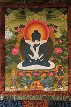

Будда Самантабхадра (По тибетски Кунту Зангпо, что означает «Всеблагой») является Буддой Дхармакайи, Будда пустотной природы ума. В школе Ньингма-па изначального Будду называют Самантабхадрой , он есть Ади Будда.
В иконографии Самантабхадра, его тело изображается тёмно-синего цвета, этот цвет символизирует безграничность пространства природы ума. Он может изображаться как в одиночной форме, так и в союзе с шакти (Яб-Юм). Шакти всегда белого цвета, белый цвет символизирует изначальную чистоту измерения пустотной природы ума. Союз Яб -Юм есть единство всего в недвойственности, что является также символом неразрывного единства блаженства и пустоты. В отличие от Ваджрадхары, тантрической персонификации Дхармакаи, Самантабхадра и его супруга изображаются обнаженными и без украшений. Это означает свободу изначальной природы реальности от каких-либо «одеяний».
Супруга Самантабхадры, ее зовут Самантабхадри, символизирует пустотность. Эта пустотность расположена за пределами концепций, вне формы и цвета. О ней говорят, как о изначально чистой и свободной от каких-либо отражений ума.